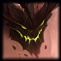

Team Fight Tanks
There are a lot of different champions you can pick in top lane, but the most common champions you play
when you're with a team you know are Tank champions.
Tank champions don't really go off the meta because they are all ways reliable front liners to tank the enemy
carrys damage and protect you're damage dealers. I will give you some recommendations for Tank champions.
1. Ornn 
. Ornn is a very reliable Tank he has a lot of crowd control which consist of a lot of knock ups and slows. Ornn also has a shield on is W combine that with how big of a tank he becomes later on he is very hard to kill. Plus his abilities do hp% damage so he has a lot of potential to kill in lane,but Ornn does need more practice to get good with his abilities as some of them are hard to hit.
. Ornn is a very reliable Tank he has a lot of crowd control which consist of a lot of knock ups and slows. Ornn also has a shield on is W combine that with how big of a tank he becomes later on he is very hard to kill. Plus his abilities do hp% damage so he has a lot of potential to kill in lane,but Ornn does need more practice to get good with his abilities as some of them are hard to hit.
2. Malphite 
. Malphite like Ornn is really tanky he also has a shield that comes of his passive. Unlike Ornn his abilities are much more easy to land and need practically no skill except his ultimate that is a skill shot. Malphite in lane is very good at sustain with his passive shield and poke with his abilities. Once you bring you're enemies hp down he is very good at chasing and killing them with his Q. A goood Malphite on a teamfight will use his ultimate to turn the fight in his allies favor.
. Malphite like Ornn is really tanky he also has a shield that comes of his passive. Unlike Ornn his abilities are much more easy to land and need practically no skill except his ultimate that is a skill shot. Malphite in lane is very good at sustain with his passive shield and poke with his abilities. Once you bring you're enemies hp down he is very good at chasing and killing them with his Q. A goood Malphite on a teamfight will use his ultimate to turn the fight in his allies favor.
3. Shen  .
.
Shen really shines in early fights because of his ultimate where he channels a teleports to a allie anywhere in the map and gives a big shield to protect them. This can turn the tide of the fight really fast in the favor of you're team in small teamfights like in bot lane 2v2 or mid lane. You can help you're team win early fights and become more feed in the game. Late game Shen provides stuns, slows and a lot of tankines, with his W that makes him and his team immune to auto attack damage in a small area.
Those were some of the strongest tanks right know but there is a lot more of them you can check them out in the game and see which ones you like.
.Shen really shines in early fights because of his ultimate where he channels a teleports to a allie anywhere in the map and gives a big shield to protect them. This can turn the tide of the fight really fast in the favor of you're team in small teamfights like in bot lane 2v2 or mid lane. You can help you're team win early fights and become more feed in the game. Late game Shen provides stuns, slows and a lot of tankines, with his W that makes him and his team immune to auto attack damage in a small area.
Those were some of the strongest tanks right know but there is a lot more of them you can check them out in the game and see which ones you like.
 .
.